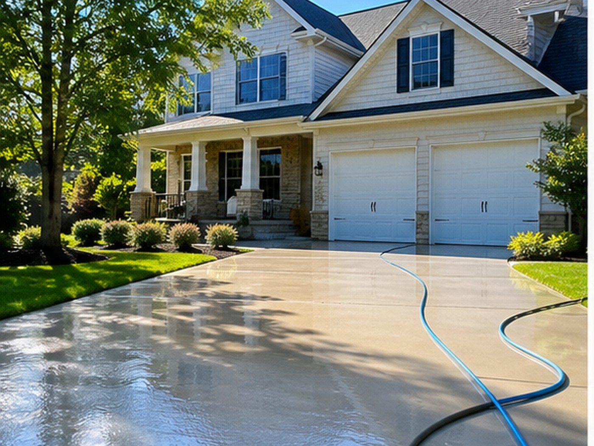
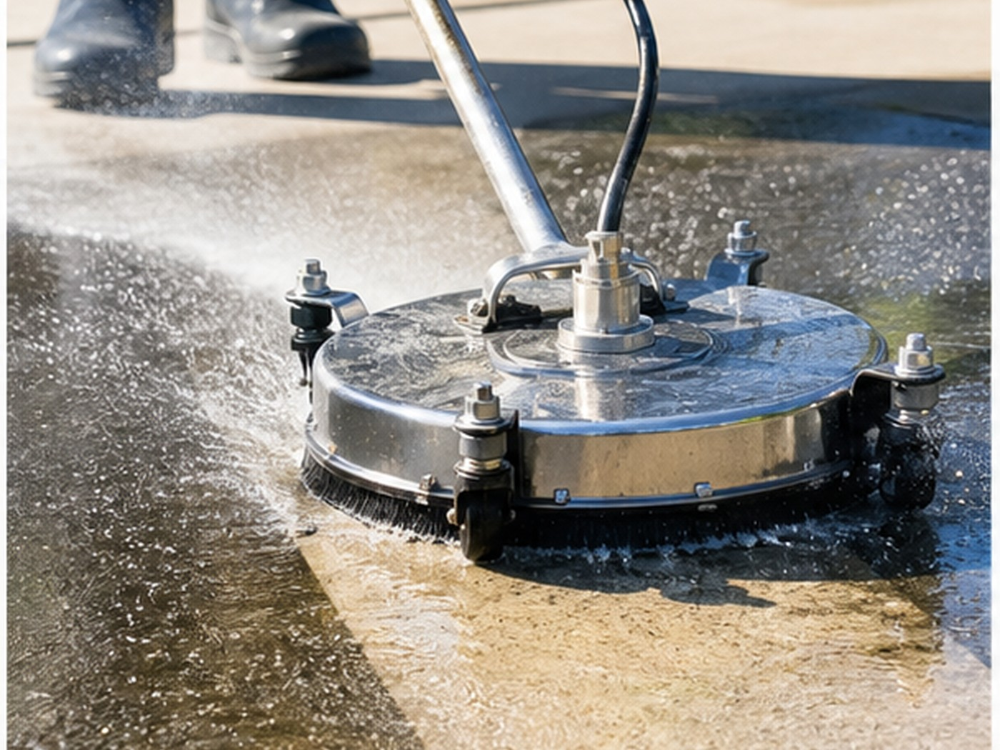
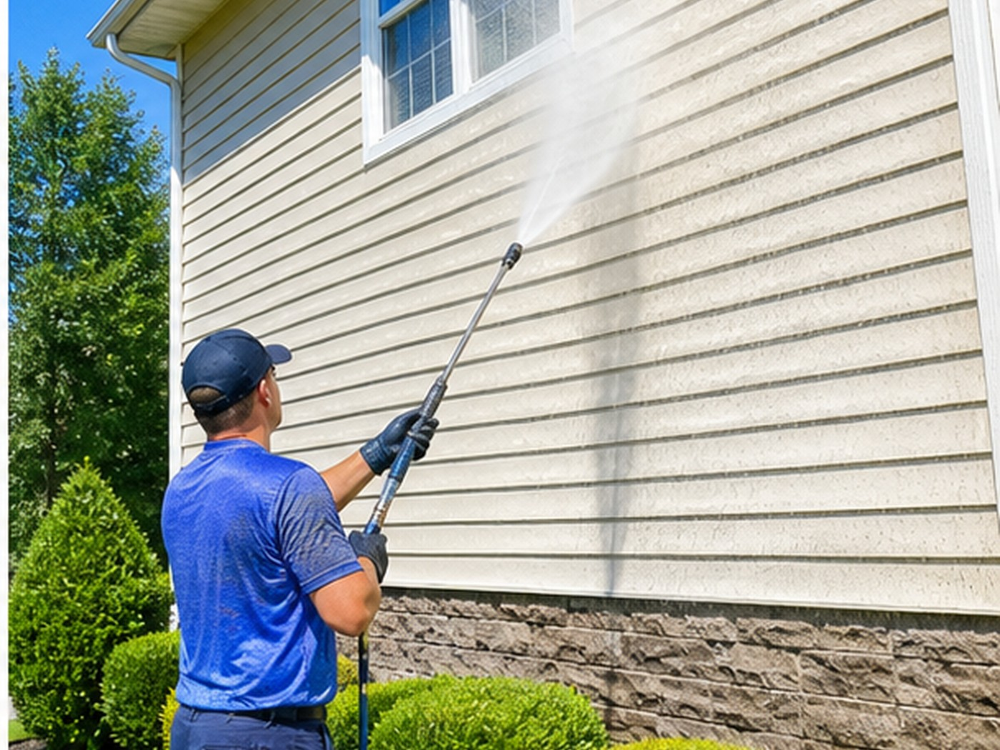

Veteran-owned pressure washing
Exterior cleaning that shows the before and after.
House washing, driveway cleaning, sidewalk cleaning, soft washing, and exterior refreshes across Inman and Spartanburg County.
- 4.9105 Google reviews
- Pressure WashingInman, SC
- FastTap-to-call scheduling

Services
Clear options for local customers.
- House washing
- Driveway cleaning
- Sidewalk cleaning
- Soft washing
- Exterior refreshes
- Quote requests

Local service
Exterior cleaning customers can see and request clearly.
New Again House Wash helps homeowners choose the right wash plan and request service for siding, driveways, sidewalks, and exterior refreshes.

Service path
Build the right wash plan.
A house wash request should capture siding type, square footage, staining, and preferred timing.
Local proof
Built around the trust customers already look for.
- 4.9-star Google rating
- 105 public reviews
- Veteran-owned business
Contact
New Again House Wash
2820 Holly Springs Rd, Inman, SC 29349